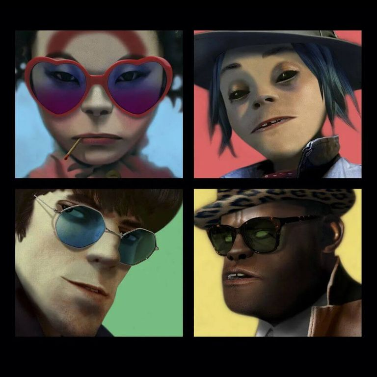
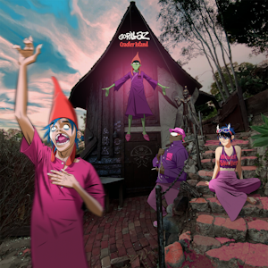

1 / 8

Gorillaz first studio album, released in 2001; Best songs include "Rock The House" and "Clint Eastwood"
2 / 8

Gorillaz second studio album released in 2005, in which music is used to critque core issues America faced post 9-11; Every song on the album is good
3 / 8

Gorillaz third album released in 2010, that took a more electronic feel whle still keeping its original gorillaz feel; Best songs include "Plastic Beach," "On Melancholy Hill," and "Pirate Jet"
4 / 8

Released seven monthes after plastic beach, The Fall takes a more chill and less serious approach the Gorillaz sound; Best songs include "Revolving Door" and "Detroit"
5 / 8

Humanz is Gorillaz fifth studio album, released after a 7 year haitus and it kinda sucks due to being messy and feeling unfinished; Best song is "sleeping Powder"
6 / 8

The Now Now was released in 2018 and is Gorillaz sixth studio album, which takes a more indie and relaxed approach while still sounding like gorillaz; Best songs include "Humility," "Kansas," "Tranz," and "Magic City"
7 / 8
The Song Machine was released 2 years after The Now Now and was the band's attempt at a COVID album, and the album is just ok; Best songs include "Momentary Bliss" and "PAC-Man"
8 / 8

Gorillaz most recent album released in 2023, and is one of their best albums, it takes an 80s synth wave feel and fully embraces the Gorillaz sound; Every song on the album is good